How games build anticipation, set up surprise, and use revelation to recontextualize what came before.
The session opens with peer playtesting of the Quandary project and a short note on collaborative playtesting. Then a long worked tour of anticipation in games and film — Hitchcock’s bomb-under-the-table distinction between surprise and suspense, followed by a string of game and film examples. Closes with the Anticipation Project pair assignment and the Photopia parser-game reading.
Playtesting — Quandary Project
Peer feedback.
Playtest approach
Treat this as cooperative playtesting. Instead of giving advice or supplying answers, ask questions that draw out what the player experienced.
Collaborative Playtesting
Sometimes it is useful to have two playtesters, even if your game is a single player experience.
Why? When two people are playing together (with one person steering, and the other person helping) then they have to talk to each other about what they should do. That gives you valuable insight into what decisions they are making and why.
This is especially useful when your game has explicit decision points — things that the player must actively choose. Those moments prompt discussion between your collaborative playtesters.
Anticipation & Outcomes
What is anticipation? Where does it come from?
Futurama: “War is the H-Word” (2000) — anticipation example.
Surprise vs. Suspense
Hitchcock’s bomb-under-the-table illustration.
“Let us suppose that there is a bomb underneath this table between us. Nothing happens, and then all of a sudden, ‘Boom!’ There is an explosion. The public is surprised, but prior to this surprise, it has seen an absolutely ordinary scene, of no special consequence.
Now, let us take a suspense situation. The bomb is underneath the table and the public knows it… In these conditions this same innocuous conversation becomes fascinating because the public is participating in the secret.
In the first case, we have given the public fifteen seconds of surprise at the moment of the explosion. In the second we have provided them with fifteen minutes of suspense.”
— Alfred Hitchcock
Anticipation in Games
What are some examples of games (not linear media) that successfully create anticipation? There will be many examples from horror-themed games. Are there others?
Gone Home (2011)
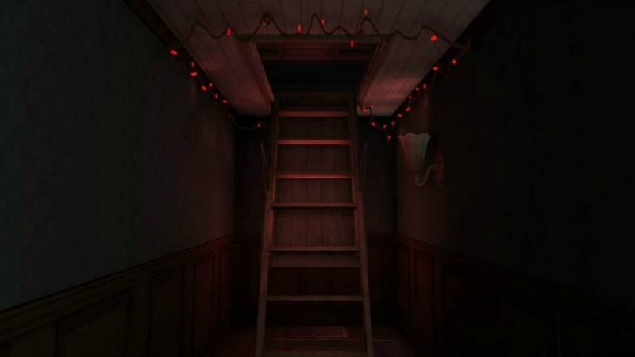
Gone Home (2011).When the plot puts a character in a difficult situation, we know they’re going to have to make a choice. It creates anticipation and sets up a surprise.
In Gone Home, you know that something has happened to the player character’s sister. You know she’s done something. You don’t know what. You know the answer is in the attic. You anticipate the surprise.
Among Us (2018)
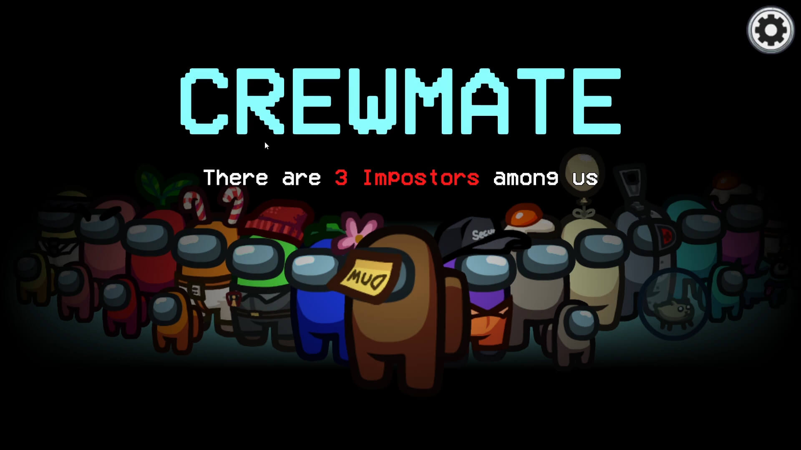
Among Us (2018).Games like Among Us create suspense through secrecy and conflict between players’ goals.
- Crewmates feel pressure and anticipation observing other players’ behavior for clues.
- Impostors feel pressure and anticipation trying to hide their status.
- All players know that important information is hidden and will be revealed at the end of the round.
Roller Coaster Tycoon (2003)
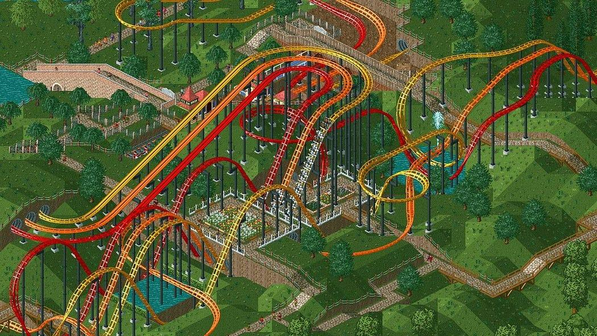
Roller Coaster Tycoon (2003).Games like Roller Coaster Tycoon create anticipation by imposing a wait time before players can make their next investment. For new rides and upgrades, the game will often reveal a new asset or animation, which adds to the anticipation even after the first playthrough.
What other games create this type of anticipation?
God of War (2018)
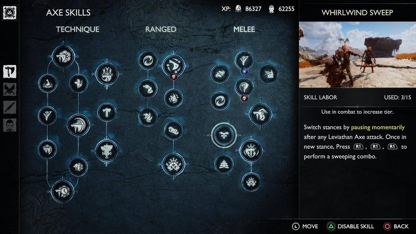
God of War (2018) — Leviathan Axe skills.RPGs like God of War create anticipation by unlocking skills and mechanics through gameplay (experience points). Players anticipate having a more powerful weapon, new mechanics and animations.
What other games create this type of anticipation?
The Beginner’s Guide (2015)
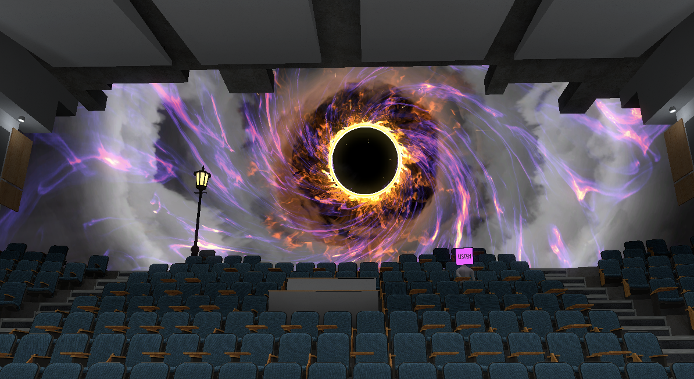
The Beginner’s Guide (2015).In The Beginner’s Guide, the sense that something is wrong gradually builds throughout the second half of the experience. You know there’s something you aren’t being told.
The game is constructed around a revelation that comes at the end. You can anticipate that a change is coming, but the change itself is a surprise. It makes you reconsider how you interpreted the story up to that point.
Revelation — The Sixth Sense, Fight Club, Bioshock
The Sixth Sense (1999).
Fight Club (1999).
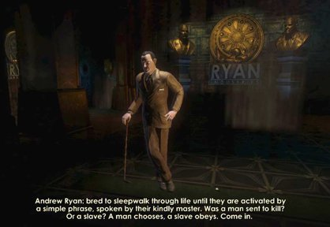
Bioshock (2007).Revelation is another way of creating surprise. The surprise comes when the viewer (or player) has to recontextualize events of the plot based on a new understanding of the relationship between characters. Someone is not who we thought they were. Roles are reversed.
The way that a twist works is by forcing this change in perspective. You anticipate one outcome, but get something else entirely. The effectiveness of the surprise comes from how it transforms the characters in our mind.
Spec Ops: The Line (2012)
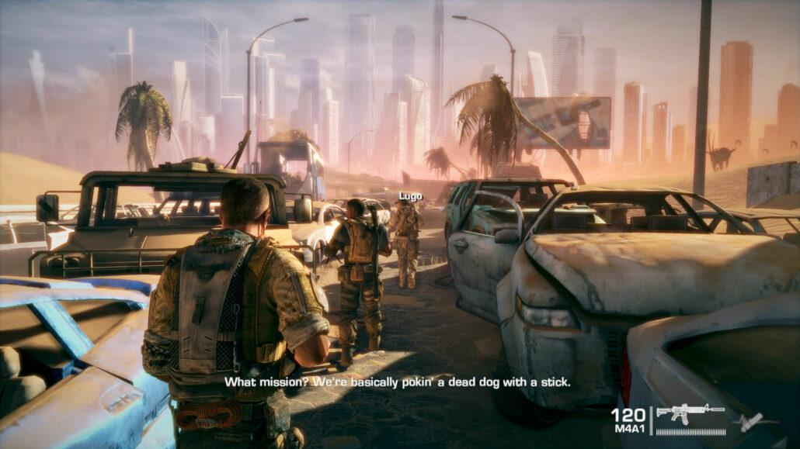
Spec Ops: The Line (2012).Spec Ops presents itself as a pretty middle-of-the-road military shooter from the 2010s. You play Martin Walker, who leads a team of US soldiers through post-disaster Dubai. You’re on a mission to find Konrad, a US Army defector who is responsible for horrific acts of violence against the native population. You anticipate bringing a criminal to justice and making him take responsibility for his actions.
At the end of the game it’s revealed that Walker is suffering from PTSD and has hallucinated significant details, including all the radio conversations he’s had with Konrad. The game questions your own responsibility for the violence you’ve enacted during your mission.
Shadow of the Colossus (2005)
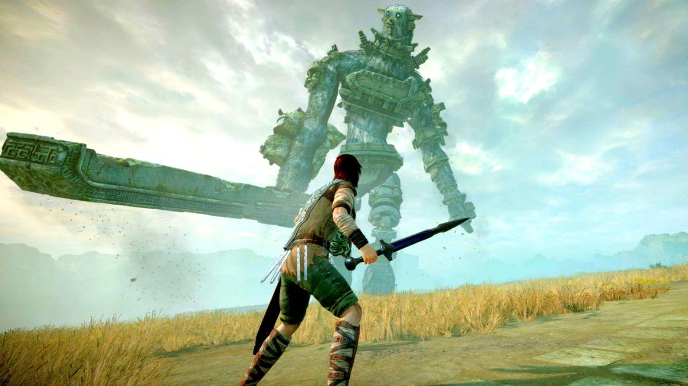
Shadow of the Colossus (2005).In Shadow of the Colossus, the player is guided to massive creatures with designs reminiscent of bosses from ARPG games. At first, it is exciting to attack each unique enemy, figure out how to approach it, solve its puzzle, and defeat it. The player anticipates a traditional ARPG arc of growing stronger and accomplishing ever greater feats of heroics.
Over time, however, the satisfaction of defeating these creatures sours. They aren’t monstrous, but majestic; you aren’t a hero, but a villain.
Mats and the Metamagicians (2020)
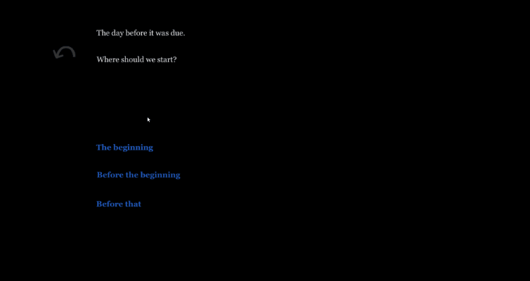
Mats and the Metamagicians (2020) — text interface fading to reveal a 3D room.Mats and the Metamagicians was a student project by an undergraduate named Mats Borges. The game presents as a text-based multiple choice game written in Twine. Your expectations are set by your experience with this particular form.
After a few minutes of playing, the text interface begins to slowly fade out, revealing the interior of a 3D room. The player suddenly realizes that they can move to the door and exit the room, where they find themselves outdoors in an expansive landscape.
Assignment
W07-Assignment - Anticipation Project
Parser-Based Games
How many of you have played a parser-based game before?
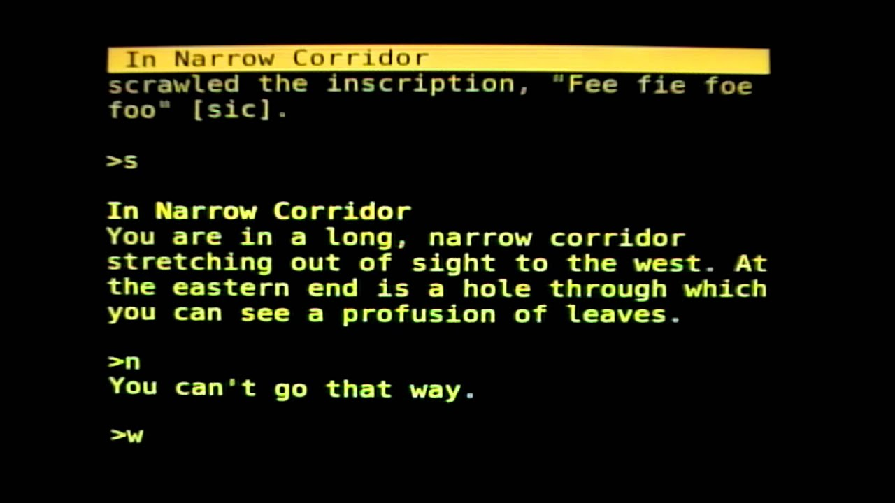
A parser game in play.In the 1970s and 1980s, text adventure games were popular entertainment for the computers of the day. They are the predecessors of modern adventure genres, including 2D graphic adventure games (Old Skies, 2025), puzzle / mystery games (Sherlock Holmes, 2021), and immersive sims (Indiana Jones, 2024).
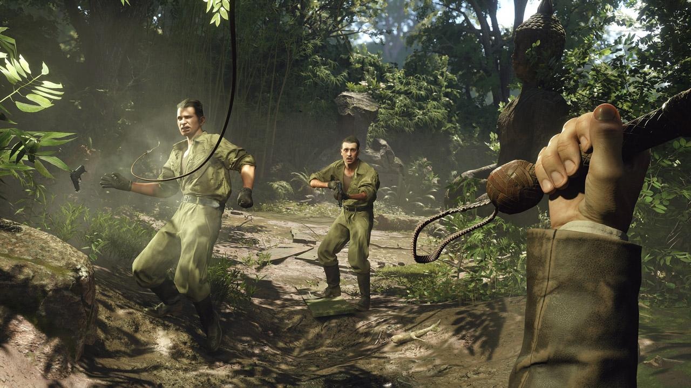
Old Skies (2025).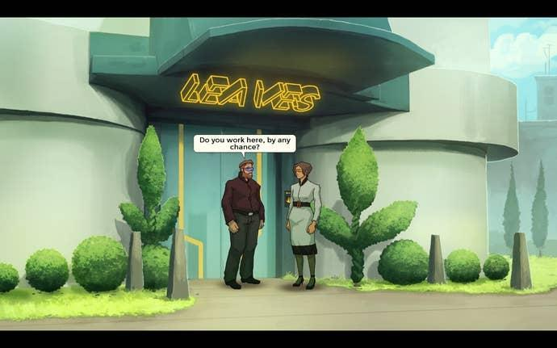
Sherlock Holmes (2021).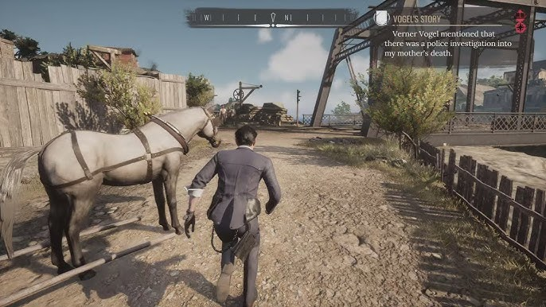
Indiana Jones (2024).In the 1990s and 2000s, parser-based games became popular among hobbyists and academics as a sandbox and testbed for experimental narrative. These games were known as interactive fiction, and they’ve had a large influence on modern and mainstream narrative design. Many of these games use the conventions of the genre to explore and comment on different narrative techniques.
Reading — Photopia (Adam Cadre)
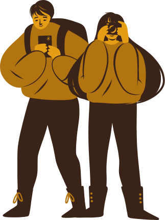
Photopia (Adam Cadre).Play by next Thursday. We will discuss in class.
Photopia is not designed to be hard, but if you are unfamiliar with parser games it might be challenging to engage with it. Play on your own or with a partner or small group. I recommend playing in pairs over Discord. If you get stuck, try things or restart. Play at least 60 minutes without referring to guides or online solutions. After that, you can be done with the reading.
https://adamcadre.ac/if/photopia.html
Parser commands
LOOKandLOOK ATorEXAMINELOOK AT MYSELForWHO AM ITALK TON,E,S,W,U,D, orGOSTAND,ENTER,EXIT,OUTGIVE,TAKE,OPEN,CLOSEDIG,LISTEN,TAKE OFF,TURN OFF,PUSH,FIGHT,RUBHELP
Tips for playing
- Use the “look at” construction. “Look at the ship” or “look at myself”.
- Use the “talk to” construction. You’ll be given dialogue options.
- You can use “help” to get in-game hints. This is allowed.
- Draw maps — simple ones are fine.
- There’s one part where all you can do is listen for a little while.
- When things get repetitive, pay close attention to what the game is telling you. It will drop hints, but sometimes only once.
- If you finish the game in less than an hour, you don’t have to keep playing longer.
See You Next Time
Start working on your Anticipation Project. We’ll discuss the reading on Thursday.
Related
- W07-Assignment - Anticipation Project
- Reading - Photopia (Adam Cadre)
- Game - Gone Home
- Game - Among Us
- Game - Roller Coaster Tycoon
- Game - God of War
- Game - The Beginner’s Guide
- Game - BioShock
- Game - Spec Ops The Line
- Game - Shadow of the Colossus
- Game - Mats and the Metamagicians
- Game - Old Skies
- Game - Sherlock Holmes 2021
- Game - Indiana Jones 2024
- Game - Photopia
- Film - The Sixth Sense
- Film - Fight Club
- Surprise vs Suspense
- Anticipation in Games
- Revelation and Recontextualization
- Collaborative Playtesting
- Parser-Based Games